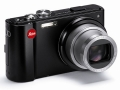

器材库 > 不可换镜头数码相机 > V-LUX 20

规格总览
发布日期
2010-04-20
防水
否
影像规格
影像传感器
CCD
影像传感器尺寸
1/2.33英寸
总像素
1450万
有效像素
1210万
静态图像格式
JPEG
静态图像尺寸
4000×3000, 3264×2448, 2560×1920, 2048×1536, 640×480
画幅比
3:2, 4:3, 16:9
短片格式
AVI
短片尺寸
1280×720@30fps
镜头和对焦
镜头结构
10片/8组
非球面镜片
3片
焦距
4.1mm-49.2mm
等效35mm画幅焦距
25mm-300mm
最大光圈
f/3.3-4.9
光学变焦
12倍
数码变焦
4倍
最近对焦距离
广角50cm, 长焦200cm, 微距3cm
对焦模式
面部/AF 追踪/ 多点（11 点）/1 点高速/1 点/ 定点
曝光控制
测光模式
中央重点测光, 多分区评价测光, 点测光
曝光模式
P（程序自动曝光）, A（光圈优先自动曝光）, S（快门速度优先自动曝光）, M（手动测光曝光）
场景模式
肖像/ 柔肤/ 变换/ 自拍/ 风景/ 全景辅助/ 运动/ 夜间肖像/夜景/ 食物/ 派对/ 烛光/ 宝宝1&2/ 宠物/ 日落/ 高感光度/ 高速连拍（画质优先/ 速度优先）/ 闪光灯连拍/ 星空/ 烟火/ 海滩/ 雪景/ 空中摄影/ 针孔/ 喷沙/ 高动态（标准/艺术/黑白）/ 相框
快门速度
60 - 1/2000秒
曝光补偿
±2EV以1/3EV级调整
ISO感光度
80, 200, 400, 800, 1600, 自动
白平衡
日光, 阴天, 阴影, 自动, 卤素灯, 手动白平衡
连拍
2.3fps，最多5张
拍摄模式
智能自动, 标准图像, 场景模式, 我的场景, 动态影像，剪贴板
闪光灯
内置闪光灯
固定
闪光模式
自动, 慢速同步, 减轻/消除红眼, 强制闪光, 禁止闪光
闪光涵盖范围
W：0.6m～5.3m、T：1.0m～3.6m
取景规格
LCD类型
彩色TFT LCD
LCD尺寸
3.0英寸
LCD像素
46万
视野率
100%
文件输入/输出
内置存储容量
15MB
记录媒介
SD/SDHC, SDXC
数据接口
USB2.0
视频/音频接口
Video 输出 (NTSC/PAL), HDMI Mini 输出
配件端口
外接电源插孔
支持打印协议
PictBridge, DPOF
电源
电池
锂离子电池
外观
颜色
黑色
尺寸
103×62×33mm
重量
196g
其它
GPS
有
张淼淼2012-05-08 08:444 分
操作性 3.50功能性 4.00美观性 4.50趣味性 4.00耐用性 4.50性价比 4.00解像力 3.50色彩还原 4.00
情系摄影2011-01-09 12:45
三补色2011-01-04 22:463.69 分
操作性 4.00功能性 3.50美观性 4.00趣味性 3.00耐用性 3.00性价比 4.50解像力 3.00色彩还原 4.50
为我舞动2010-12-17 10:344.5 分
操作性 4.50功能性 5.00美观性 4.00趣味性 4.00耐用性 5.00性价比 5.00解像力 3.50色彩还原 5.00
产品图 / 样片
V-LUX 20
评测 / 相关文章
- 详细内容 （存档）
- 奢华袖珍长焦徕卡V-LUX20测试报告 （存档）
- ［行情］徕卡专场兔年迎新春精彩促销第七波！ （存档）
- ［行情］新年优惠 买徕卡V-LUX20送原厂包 （存档）
- ［专题］随侃：袖珍长焦的那些当家花旦们 （存档）
- ［资讯］支持多款新相机 SILKYPIX软件升级 （存档）